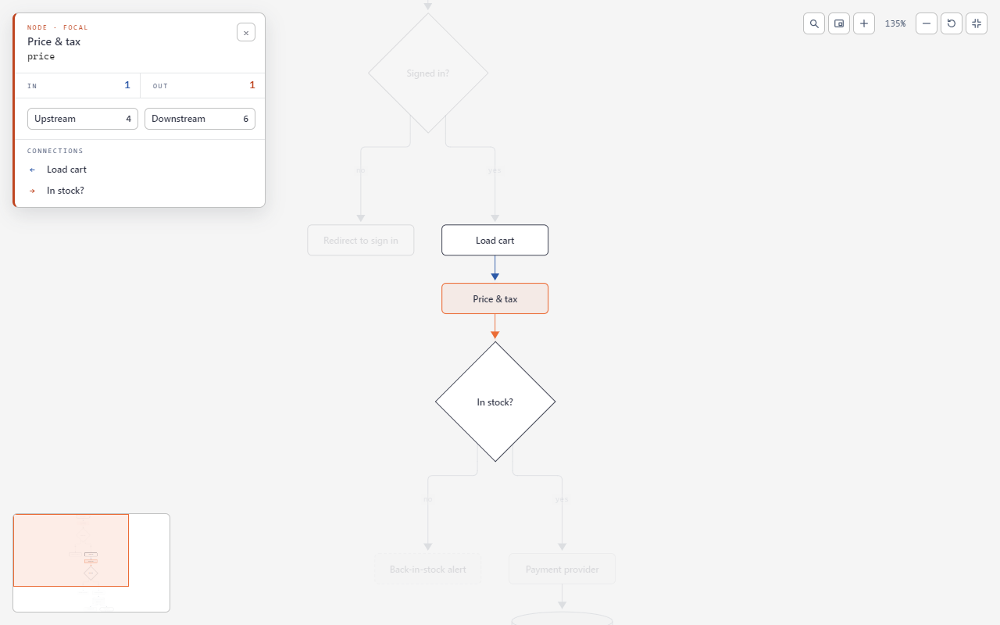
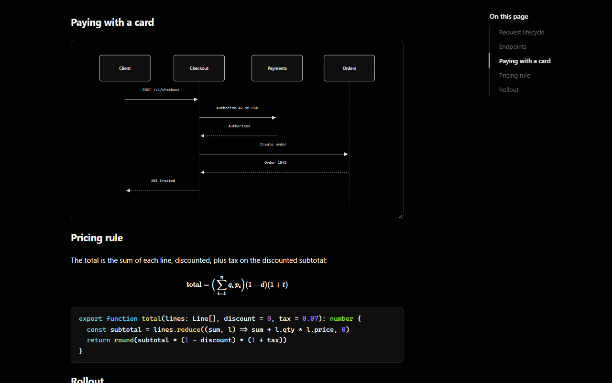
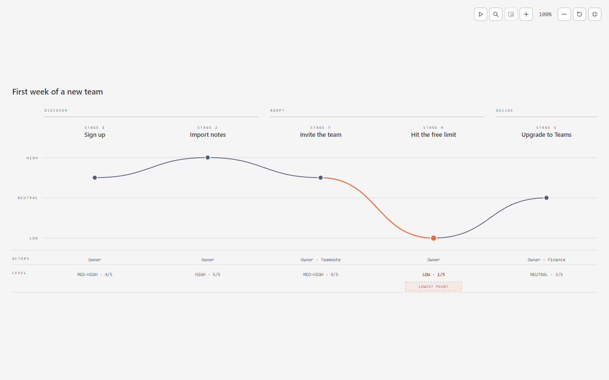
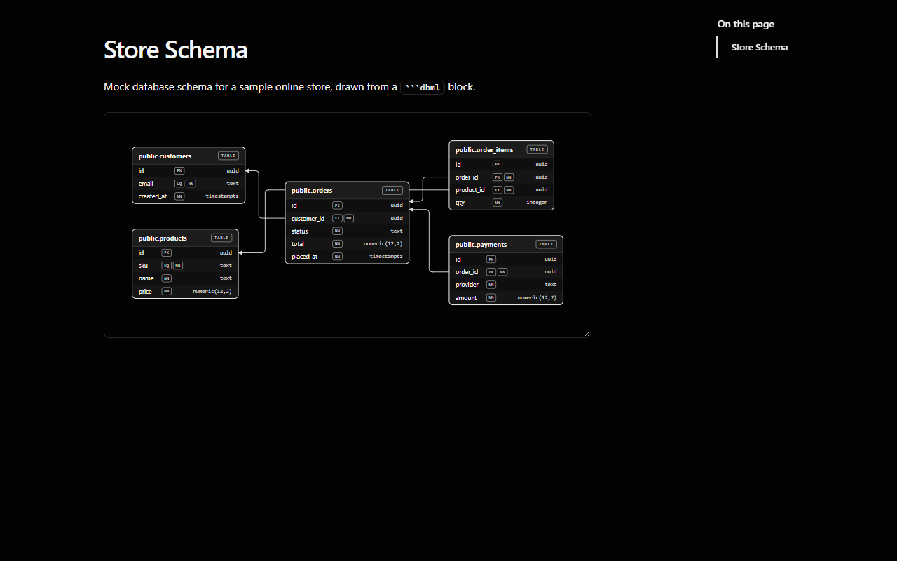
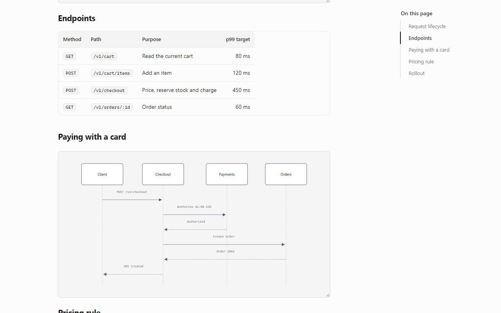

01 / Fullscreen viewer
Zoom, find a node, and see what flows in and out of it.

02 / Light or dark
Every diagram follows the theme you read in.

03 / Playback
Step through a user journey or a release history, one stage at a time.

04 / DBML
Tables, keys and relations straight from a dbml code block.

05 / Documents
Tables, code, math and a table of contents for every document.

Mermaid · DBML · Math · Code
Mermaid diagrams you can explore in fullscreen: zoom, search, follow and play.
Flowchart · Sequence · Journey · DBML